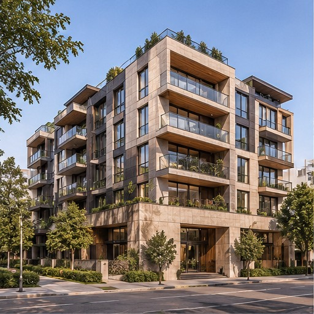
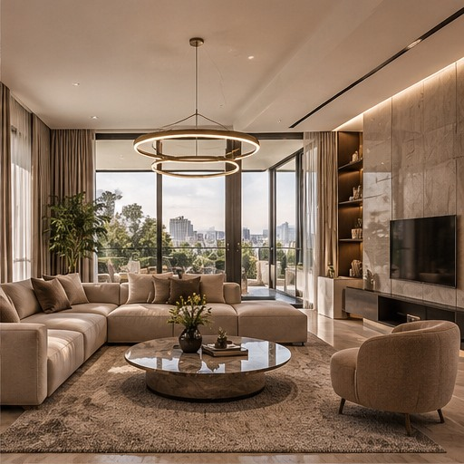

مجتمع مسکونی آتریوم
ترکیبی از نور طبیعی، تراسهای عمیق و فضاهای جمعی برای زندگی شهری.
هر پروژه، فرصتیست برای ساختن فضایی بهتر؛ با طراحی دقیق، انتخاب هوشمندانهی متریال و توجه به جزئیاتی که ماندگار میشوند.

ساخت خوب از یک تصمیم درست شروع میشود؛ از شناخت زمین و نیازهای آدمها تا طراحی، اجرا و تحویل فضایی که واقعاً کار میکند.
در آوان، هر پروژه با نگاهی یکپارچه به معماری، عملکرد و کیفیت اجرا پیش میرود. تلاش میکنیم میان زیبایی فرم، آسایش ساکنان و دوام ساختمان تعادل برقرار کنیم؛ بدون آنکه جزئیات مهم قربانی سرعت شوند.
رویکرد
از ایده تا جزئیات نهایی
مروری بر نمونه پروژههای مسکونی، ویلایی و اداری؛ هر کدام با مسئلهای متفاوت و پاسخی متناسب با بستر خود.
ترکیبی از نور طبیعی، تراسهای عمیق و فضاهای جمعی برای زندگی شهری.
ارتباط آرام و پیوستهی فضای داخلی با منظر و محوطهی بیرونی.
تأکید بر تناسبات ساده، حریم خصوصی و کیفیت فضاهای نیمهباز.
فضاهای کاری منعطف در پوستهای شفاف و متناسب با بافت شهری.
بازتعریف فضای روزمره با متریال طبیعی، نورپردازی لایهای و جزئیات مینیمال.
سه اصل در هر تصمیم
کیفیت یک ساختمان حاصل مجموعهای از انتخابهاست؛ از طرح اولیه تا آخرین مرحلهی اجرا.
شناخت دقیق نیازها، شرایط زمین و بافت اطراف؛ پیش از آنکه اولین خط روی نقشه کشیده شود.
هماهنگی میان تیمها، کنترل جزئیات و توجه به کیفیت مصالح در تمام مراحل ساخت.
تصمیمهایی فراتر از ترندهای زودگذر؛ برای ساختمانی که در گذر زمان همچنان ارزشمند بماند.
پروژهی موفق نتیجهی یک فرآیند منظم است؛ هر مرحله، پایهی مرحلهی بعدی را میسازد.
بررسی زمین، نیازها، محدودیتها و ظرفیتهای پروژه.
تدوین طرح، انتخاب متریال و برنامهریزی زمان و منابع.
پیشبرد عملیات و کنترل مستمر کیفیت و جزئیات.
جمعبندی نهایی، بررسی کیفیت و آمادهسازی فضا.